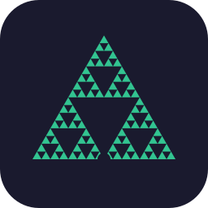
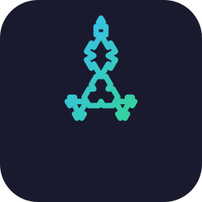
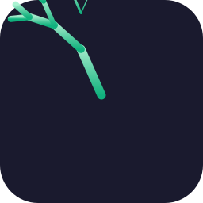

分形 Logo 候选方案
三个几何分形方向 · 全部暗底 #1a1a2e 圆角 48 · 与当前 UI 主题色一致
方案 A · 谢尔宾斯基三角
经典分形符号，几何秩序感，识别度高
绿 #34d399 / 暗底 #1a1a2e

方案 B · 科赫雪花
自然分形，柔和优雅，亲和力强
天蓝→绿渐变

方案 C · 递归分叉树
生命成长感，隐喻 AI 助手帮你成长
翠绿→浅绿渐变

选定后：生成全套尺寸（512/256/128/64/32/16 + favicon + ico），替换 logo.svg / resources/icon.png / build/icon.png